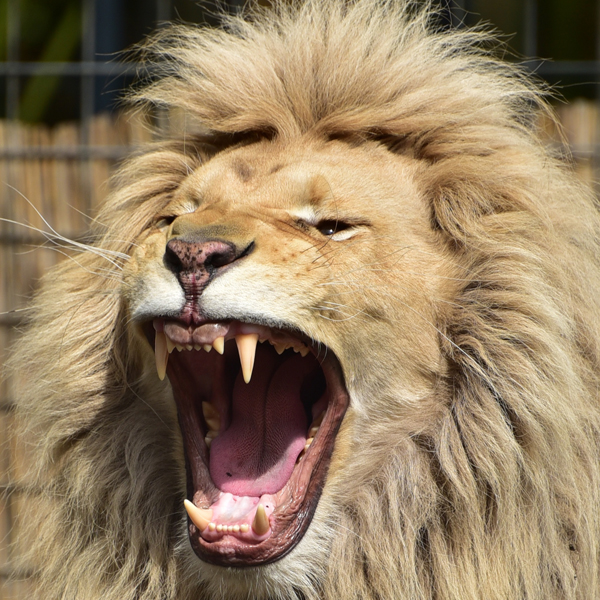

The safesty way to experience Panthera leo!
The lion (Panthera leo) is a species in the Felidae family and a member of the genus Panthera. It has been listed as Vulnerable on the IUCN Red List since 1996, as populations in African range countries declined by about 43% since the early 1990s. Lion populations are untenable outside designated protected areas. Although the cause of the decline is not fully understood, habitat loss and conflicts with humans are the greatest causes of concern. The West African lion population is listed as Critically Endangered since 2016. The only lion population in Asia survives in and around India's Gir Forest National Park and is listed as Endangered since 1986.
The lion typically inhabits grasslands and savannahs, but is absent in dense forest. It is usually more diurnal than other big cats, but when persecuted adapts to being active at night and at twilight. A lion pride consists of a few adult males, related females and cubs. Prides vary in size and composition from three to 20 adult lions, depending on habitat and prey availability. Females cooperate when hunting and prey mostly on large ungulates. They are opportunistic hunters and prefer prey weighing 190 to 550 kg (420 to 1,210 lb).The lion is an apex and keystone predator.
With some males exceeding 250 kg (550 lb) in weight, it is the second-largest living cat species after the tiger. Wild male lions seldom live longer than 10 to 14 years, as injuries sustained from continual fighting with rival males greatly reduce their life span. Captive lions live more than 20 years.
In the Pleistocene, the lion was the most widespread large land mammal and ranged from Southern Africa to Northern Europe, across all of Asia and North America to Peru. Panthera leo spelaea lived in northern and western Europe, and Panthera leo atrox in the Americas.
Male lions are easily recognized by their manes, and the male's face is one of the most widely recognised animal symbols in human culture. Cultural depictions of lions are known from the Upper Paleolithic period, with carvings and paintings from the Lascaux and Chauvet Caves in France dated to 17,000 years ago, through virtually all ancient and medieval cultures where they once occurred. It has been extensively depicted in sculptures and paintings, on national flags, and in contemporary films and literature. Lions have been kept in menageries since the time of the Roman Empire, and have been a key species sought for exhibition in zoos over the world since the late 18th century. Zoos are cooperating worldwide in breeding programs for the endangered Asiatic lions.
